Read it in order the first time. Each chapter starts with the intuition, then the theory, then what we actually did (with the file names), and ends with viva questions.
We teach a computer how one transistor leaks under any process, voltage and temperature condition. Then we predict the leakage of whole gates and a whole adder by adding up transistors, with no circuit-level SPICE run needed.
A switched-off chip should draw no current. Real transistors are leaky taps, and a billion leaky taps add up to a flood.
Think of each transistor as a water tap. Ideally a closed tap (OFF transistor) lets through no water. At 16 nm the tap washer is a few atoms thick and the tap is so short that it never fully seals: there is always a drip. A phone chip has billions of taps, so even a drip of 100 nA each becomes amperes of wasted current, and that drains your battery while the screen is off.
The size of the drip is not fixed. It depends on:
vth0, toxe, ndep, u0, xj).Leakage depends exponentially on several of these, so the same gate can leak 10× more at one corner than at another. A designer needs leakage at thousands of corners, for thousands of gates, for every input pattern. That is a lot of SPICE.
SPICE solves the full non-linear circuit equations: exact, but slow for big circuits and many corners. Our idea is to learn the transistor once, from SPICE, as a fast function. After that, any gate or circuit is just a sum of transistor evaluations. SPICE is still used, but only to (a) teach the transistor models and (b) check our answers.
Our assignment (Team 1, "Leaky Lima"): PTM 16 nm high-performance model card models/16nm_HP.pm, nominal VDD 1.0 V, test circuit a 3-bit carry-lookahead adder. All of this lives in one file, config.py, so every script uses the same values. One detail worth remembering: PTM's own nominal VDD for this card is 0.7 V. Running it at 1.0 V makes leakage unusually large (about 0.1-3 µA per gate), which is a good stress test.
Why not just simulate everything in SPICE? For our adder SPICE needed about 1,200 s for the 25,600 operating points on an otherwise idle 16-thread laptop with 12 parallel ngspice workers (the final rerun took 7628 s because it shared the CPU with model training), against 8.24 s for the hierarchical ML. The gap widens with circuit size, because SPICE cost grows super-linearly with the number of nodes, while the ML cost is a lookup and a sum per gate.
Three ways current sneaks through a "closed" transistor. Every one of them is exponential in something, and that single fact shapes every later decision.
Between source and channel sits an energy hill, the "barrier". The gate voltage controls its height. Below threshold the hill is tall, but electrons have a spread of thermal energies (a Boltzmann distribution), so a few always have enough energy to get over. The fraction that make it falls off exponentially with the barrier height:
Read it term by term. W/L: a wider channel means more parallel paths. exp[(VGS−Vth)/nVT]: every 60-90 mV of gate voltage changes the current by 10×. [1 − exp(−VDS/VT)]: once VDS is a few VT this is ≈ 1, and at VDS = 0 it is 0 (no push, no flow).
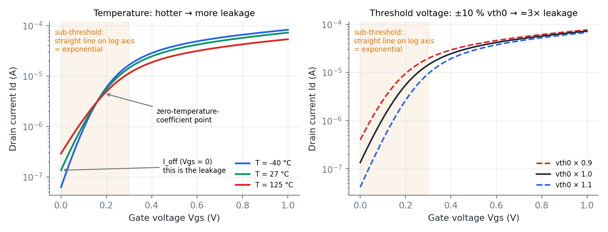
| Effect | What happens | Effect on leakage | Where you see it in this project |
|---|---|---|---|
| vth0 variation | The built-in threshold varies with process | exp(−ΔVth/nVT): +10 % vth0 (48 mV) → ×0.31 | Trend plot (Ch. 3), corner error analysis |
| Temperature | VT grows and Vth drops as T rises | 25 → 125 °C: ×2.2 here (weaker than in older nodes) | Trend plot |
| DIBL (drain-induced barrier lowering) | In a 16 nm channel the drain is so close that its voltage pulls the barrier down | Higher VDS → lower Vth → more leakage | Why 1 V (instead of 0.7 V) gives huge leakage |
| Body effect | Source raised above body (VSB > 0) → Vth rises | Raised source → much less leakage | The stack effect (Ch. 7) |
The gate oxide here is under one nanometre, just a few atomic layers. Quantum mechanics lets electrons tunnel straight through a thin barrier, with a probability that falls exponentially with thickness. So toxe is the knob: in our data, +10 % toxe gives ×0.23 gate current. Tunnelling happens wherever there is voltage across the oxide: gate↔source, gate↔drain (the overlap regions) and gate↔channel/body.
The drain and source are n-type islands in a p-type body, i.e. p-n diodes. In normal operation they are reverse-biased and leak a tiny saturation current. GIDL (gate-induced drain leakage) adds band-to-band tunnelling where the gate overlaps the drain. In ON devices, impact ionisation (isub) also pushes some current into the body. In this model card all of these are around 10⁻¹⁴ A, millions of times smaller than ①.
The drain junction current is stuck at almost exactly 1.000×10⁻¹⁴ A and the source junction at about 10⁻¹⁸ A, whatever the voltage or temperature. A real diode's leakage should grow strongly with temperature. This happens because our netlists do not specify diffusion areas (AS/AD), so BSIM4 falls back to geometry defaults (geomod = 1). It doesn't affect gate leakage (too small to matter), but it matters for modelling: it is why we test symmetry instead of assuming it (Chapter 5).
Which leakage mechanism dominates in your circuits, and how do you know? Sub-threshold. In our data the OFF-channel current at VDS = VDD is about 10⁻⁷ A, while gate tunnelling is about 10⁻¹¹ A and junctions about 10⁻¹⁴ A. Our model also predicts each mechanism separately, so we can read the split directly.
Why does leakage fall so much when vth0 rises 10 %? Because it is exponential in Vth/(nVT): 48 mV / (1.5 × 26 mV) ≈ 1.2, and e−1.2 ≈ 0.30. Our SPICE sweep gives 0.31.
To learn how a transistor leaks we need examples: inputs (voltages, temperature, process) paired with the currents SPICE computes for them. 40,000 of them.
| Case | Vg | Vb | Means |
|---|---|---|---|
| NMOS ON | VDD | 0 | NMOS with input = 1 |
| NMOS OFF | 0 | 0 | NMOS with input = 0 |
| PMOS ON | 0 | VDD | PMOS with input = 0 |
| PMOS OFF | VDD | VDD | PMOS with input = 1 |
Why four cases are enough: in static CMOS every gate terminal sits at a logic level and every body is tied to a rail. Only drain and source depend on the circuit, so those are the random inputs.
Drawn independently, uniformly, for every sample (VDD first, since Vd and Vs depend on it): VDD ∈ [0.9, 1.1] V · Vd, Vs ∈ [0, VDD] · W ∈ [16, 128] nm · T ∈ [−40, 125] °C · vth0, toxe, ndep, u0, xj ∈ nominal ± 10 %. Output: id, ig, is, ib, positive when the current flows into the transistor, so Kirchhoff's law reads Id+Ig+Is+Ib = 0.
Starting ngspice costs about 0.1 s. Starting it 40,000 times would waste over an hour. Instead each of 12 parallel workers writes one netlist that loops over its share of samples. Inside the loop, altermod changes the process parameters, alter changes the width and the voltages, and option temp changes the temperature. Then op solves, and wrdata appends one line of results.
altermod nmos vth0=4.41e-01 ← process parameters, ONE PER LINE (see below) altermod nmos toxe=8.80e-10 ... alter m1 w=7.85e-08 ← width alter vd dc=3.98e-01 ← terminal voltages (vg, vs, vb likewise) option temp=-36.7 ← temperature op ← solve the DC operating point let idx = 0 wrdata out.txt idx i(Vd) i(Vg) i(Vs) i(Vb) @m1[igs] ... ← append results
Result: 40,000 simulations in about 70 seconds, zero convergence failures. The idx column guards against a subtle failure: if one sample failed to converge, its row would be missing rather than silently shifting every later result by one.
A fast method is only trustworthy if it gives the same answers as the slow, obviously-correct one. So the generator re-simulates a few samples with a fresh netlist whose model card is edited as text, and compares. On the first run they disagreed by up to 1200 %. Testing one parameter at a time showed each worked alone, but altermod nmos vth0=… toxe=… ndep=… silently applied only the first parameter in ngspice-44.2. Four of our five process parameters were doing nothing. Fix: one altermod per line. Afterwards the two methods agree to 2×10⁻⁶, the print precision.
Lesson: always validate a fast path against a slow trusted path. Without that check the whole project would have looked fine and been wrong.
| Case | median |ΣI| / max|I| | 95th pct | worst | Verdict |
|---|---|---|---|---|
| nmos_on | 9.8e-10 | 4.3e-08 | 1.9e-03 | ✔ balanced |
| nmos_off | 8.9e-10 | 3.7e-09 | 8.3e-09 | ✔ balanced |
| pmos_on | 8.6e-10 | 1.5e-08 | 4.3e-03 | ✔ balanced |
| pmos_off | 2.1e-04 | 2.0e-02 | 1.4e-01 | ✔ (noise floor, see text) |
Kirchhoff holds to about one part in a billion. PMOS-OFF only looks worse because its currents are tiny: its gate current is around 10⁻¹⁵ A and comes out as values like 8.882×10⁻¹⁶ and 5.551×10⁻¹⁶, which are exact multiples of double-precision rounding error (2.2×10⁻¹⁶). Those numbers are noise. So from here on percentage errors are measured only for currents above 10⁻¹⁴ A, and we report what fraction of samples that keeps.
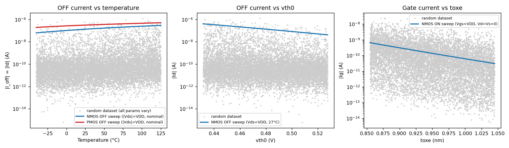
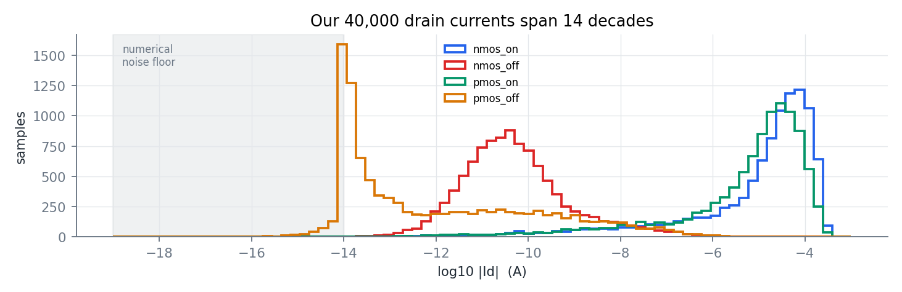
01_generate_transistor_data.py (sampling, simulation, two self-checks) · leakml/spice.py (the batching engine) · 02_data_check.py (Kirchhoff and trends) · outputs data/<case>.csv (the 10,000-row deliverables), netlists/single_<case>.cir, results/kirchhoff_check.csv.
ML here means one thing: fit a function to examples so that it is also right on examples it has never seen.
We have pairs (x, y): x = the inputs (VDD, T, W, Vd, Vs, five process parameters), y = a current from SPICE. A model is a function f with adjustable knobs (parameters). Training turns the knobs to make f(x) close to y on the training examples, usually by minimising the mean squared error. The real test is generalisation: is f right on new x?
A student who memorises last year's answers scores 100 % on last year's paper and fails this year's. A model with too much freedom can memorise its training points, including their noise, and wiggle wildly between them. The validation set is "this year's paper": it tells us whether the model learnt the rule or just memorised.
1. The target scale. Currents span 14 decades. Fitting raw amperes with squared error, a 10⁻⁵ A current dominates completely and a 10⁻¹² A current is invisible. Fitting log(current) instead means an error of 0.01 in the log is a 1 % error for every current. Relative accuracy is exactly what the brief asks for.
2. The features. A model only knows what it is shown. Physics tells us currents go like exp(V/VT), so we feed V/VT directly (where VT = kT/q) instead of hoping the model discovers the combination. Likewise log|V|, the log of the effective width, and process parameters normalised to their nominal value (so they are all ≈ 1 ± 0.1). Chapter 6 shows how two of these features were added only after the errors pointed to them.
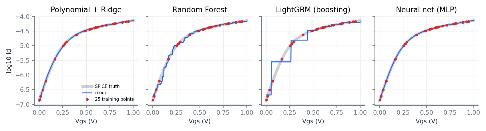
| Family | How it works | Main hyper-parameters we tried |
|---|---|---|
| Polynomial + Ridge | Creates every product of the inputs up to degree 3 or 4 (e.g. T·vth0, Vd²·W) and fits a weighted sum. "Ridge" adds a penalty on large weights so it does not overfit; the penalty strength is chosen by cross-validation. | degree 3, 4; ridge α from 10⁻⁸ to 1 |
| Random Forest | Grows hundreds of decision trees, each on a random resample of the data, and averages them. Each tree asks yes/no questions ("is Vd > 0.4?") and predicts the average of the training points in its final box. | 300 trees, 60 % features per split |
| LightGBM (gradient boosting) | Builds small trees one at a time; each new tree fits the mistakes of all previous trees. Usually the best on spreadsheet-like data. | 4,000 trees, learning rate 0.02, 31 or 63 leaves |
| MLP neural network | Layers of neurons, each computing tanh(w·x + b); stacking layers gives a smooth function that can bend in any way needed. We use 3 hidden layers of 64 or 128 neurons. | (64,64,64) and (128,128,128), tanh, L-BFGS |
Training means walking downhill on an error landscape. Adam (the usual deep-learning choice) takes many small, noisy steps; it is built for millions of noisy examples. Our data is small (≈10k) and noise-free (SPICE is deterministic). L-BFGS uses the whole dataset each step and estimates the landscape's curvature, so it can take confident, well-aimed steps (a quasi-Newton method). In our early experiments, switching from Adam to L-BFGS cut the median error from about 2 % to about 1 % with nothing else changed.
Our first attempt, predicting Id, Ig, Is, Ib directly, stalled at about 3-20 % error. The fix came from looking inside the transistor, exactly as slide 1 of the course material suggests.
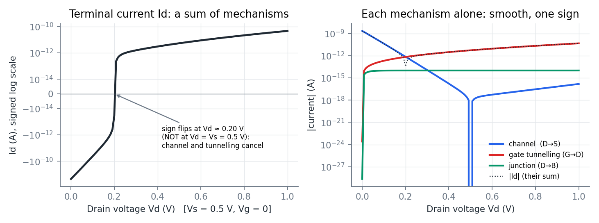
On a log scale a terminal current that crosses zero plunges to −∞ and comes back with the other sign. No smooth model can follow that, and the location of the cliff moves around with every PVT parameter. The sum is hard; the parts are easy. So we learn the parts.
ngspice can report BSIM4's internal current components (@m1[igs], @m1[igd], @m1[ibd], …). We record all eleven and combine them into six physical bipole currents. Kirchhoff then gives the terminals back exactly:
Adding the four lines gives 0: Kirchhoff's law is satisfied by construction for every prediction, not just approximately.
(1) When Vd < Vs, BSIM4 internally swaps drain and source, so igcs/igcd trade places and isub moves to the other side. (2) PMOS components are reported with n-type signs. Both were found by fitting terminal currents as signed sums of components (least squares) and confirmed by an automatic check: the six bipoles rebuild the four terminal currents to about 10⁻⁹ on every sample.
For each bipole, current flows from the higher voltage to the lower one, like a resistor. We verified sign(I) = sign(V) on 100 % of all 40,000 samples. So each bipole is a (very non-linear) resistor with a positive conductance:
One refinement, explained in Chapter 6: the final model learns the conductance per unit effective width, log(G/Weff) with Weff = W − 2·wint, and multiplies Weff back in. Wider transistors carry proportionally more current, and building that in lets the network concentrate on everything else.
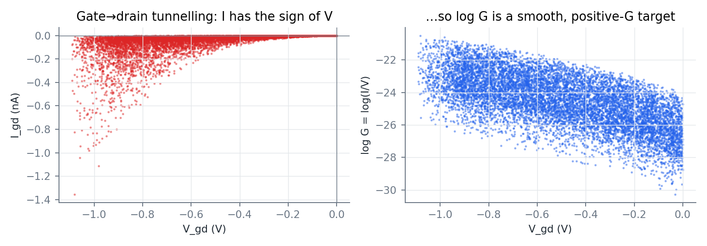
A MOSFET is physically symmetric: swap drain and source and nothing changes. If that held, gate→source and gate→drain tunnelling would be the same function with Vd, Vs swapped, and one model could learn both from twice the data. We tested it in SPICE by swapping Vd and Vs:
| Bipole pair | Swaps exactly? | Design decision |
|---|---|---|
| gate↔source / gate↔drain tunnelling | ✔ to every printed digit | One shared model, trained on both halves (2× data) |
| channel, gate↔body | ✔ (symmetric by nature) | Features: lower and higher of (Vd, Vs) |
| drain↔body / source↔body junction | ✘ drain ≈ 10⁻¹⁴ A, source ≈ 10⁻¹⁸ A whatever the voltages | Two separate models |
Our prototype had assumed junction symmetry. Its junction model sat at 70-80 % error until we found this.
leakml/bipoles.py: the six bipoles, the BSIM4 decoding, the KCL assembly. leakml/models.py: TransistorModel, the feature builder and the four learner families. Data: data/<case>_bipoles.csv.
Your model predicts six things, but the brief asks for Id, Ig, Is, Ib. Is that allowed? Yes. The model's output is the four terminal currents, and every metric is computed on them. Internally it predicts the physical mechanisms and adds them with KCL. That is a modelling choice, like predicting log I instead of I, which the brief itself suggests.
What happens at V = 0, where G = I/V is 0/0? Below 1 mV we evaluate G at 1 mV and multiply by the true V. Any smooth I-V curve is linear near zero, so this is exact in the limit, and it gives I = 0 at V = 0, as physics requires.
Four families × two hyper-parameter settings × five mechanisms × four cases = 140 small models, trained in parallel in about 101 minutes.
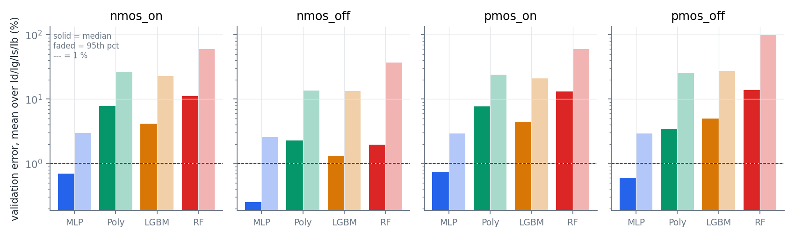
| case | family | best h-params | R² Id | R² Ig | Id med / p95 | Ig med / p95 | Is med / p95 | Ib med / p95 |
|---|---|---|---|---|---|---|---|---|
| nmos_on | Neural net (MLP) | (64, 64, 64) | 1.0000 | 1.0000 | 0.91 / 4.1 | 0.38 / 1.5 | 0.91 / 4.1 | 0.61 / 2.1 |
| nmos_on | LightGBM | num_leaves=31 | 1.0000 | 0.9994 | 2.66 / 26.0 | 3.93 / 12.6 | 2.68 / 25.9 | 7.24 / 25.8 |
| nmos_on | Polynomial + Ridge | degree=4 | 1.0000 | 0.9960 | 6.59 / 23.8 | 9.53 / 32.1 | 6.59 / 23.8 | 8.65 / 25.8 |
| nmos_on | Random Forest | trees=300 | 0.9998 | 0.9958 | 7.11 / 62.3 | 9.47 / 33.5 | 7.11 / 61.8 | 20.34 / 82.0 |
| nmos_off | Neural net (MLP) | (64, 64, 64) | 1.0000 | 1.0000 | 0.28 / 3.8 | 0.15 / 0.5 | 0.27 / 4.0 | 0.29 / 1.9 |
| nmos_off | LightGBM | num_leaves=31 | 0.9981 | 1.0000 | 1.59 / 21.4 | 0.77 / 2.2 | 1.49 / 21.6 | 1.38 / 8.3 |
| nmos_off | Polynomial + Ridge | degree=4 | 0.9999 | 1.0000 | 0.05 / 3.9 | 0.01 / 0.0 | 0.08 / 4.0 | 8.99 / 46.5 |
| nmos_off | Random Forest | trees=300 | 0.9869 | 0.9999 | 2.49 / 63.0 | 0.93 / 3.7 | 2.66 / 62.0 | 1.69 / 18.1 |
| pmos_on | Neural net (MLP) | (64, 64, 64) | 1.0000 | 1.0000 | 0.87 / 3.7 | 0.64 / 2.2 | 0.87 / 3.7 | 0.58 / 2.0 |
| pmos_on | LightGBM | num_leaves=31 | 1.0000 | 0.9990 | 2.17 / 18.6 | 6.86 / 24.2 | 2.17 / 18.5 | 6.19 / 22.6 |
| pmos_on | Polynomial + Ridge | degree=4 | 1.0000 | 0.9976 | 6.48 / 20.6 | 8.75 / 27.1 | 6.48 / 20.6 | 8.98 / 27.6 |
| pmos_on | Random Forest | trees=300 | 0.9999 | 0.9913 | 6.08 / 43.7 | 21.37 / 80.2 | 6.08 / 43.7 | 18.53 / 70.4 |
| pmos_off | Neural net (MLP) | (64, 64, 64) | 1.0000 | 0.9936 | 0.64 / 3.7 | 0.33 / 1.7 | 0.96 / 4.1 | 0.47 / 2.3 |
| pmos_off | LightGBM | num_leaves=31 | 0.9992 | 0.9935 | 6.50 / 44.9 | 1.19 / 3.3 | 10.66 / 49.3 | 1.70 / 11.7 |
| pmos_off | Polynomial + Ridge | degree=4 | 0.9999 | 0.9936 | 1.52 / 14.1 | 0.22 / 1.6 | 0.99 / 23.3 | 10.75 / 63.5 |
| pmos_off | Random Forest | trees=300 | 0.9918 | 0.9934 | 21.54 / 164.4 | 1.53 / 6.0 | 29.60 / 199.7 | 2.71 / 23.7 |
Median and p95 are relative errors in %, for currents above 10⁻¹⁴ A. R² is on a signed-log scale. Highlighted: the chosen model per case.
| case | chosen model | Id med / p95 (kept) | Ig | Is | Ib | rail test: Id med / p95 |
|---|---|---|---|---|---|---|
| nmos_on | Neural net (MLP) (64, 64, 64) | 0.86 / 4.2 (100 %) | 0.39 / 1.6 (100 %) | 0.86 / 4.1 (100 %) | 0.61 / 2.1 (100 %) | 0.92 / 4.6 |
| nmos_off | Neural net (MLP) (64, 64, 64) | 0.29 / 3.8 (100 %) | 0.16 / 0.5 (100 %) | 0.28 / 3.5 (100 %) | 0.33 / 1.8 (88 %) | 0.64 / 6.5 |
| pmos_on | Neural net (MLP) (64, 64, 64) | 0.84 / 3.5 (100 %) | 0.64 / 2.4 (94 %) | 0.84 / 3.5 (100 %) | 0.59 / 2.1 (100 %) | 0.90 / 4.7 |
| pmos_off | Neural net (MLP) (64, 64, 64) | 0.58 / 3.5 (94 %) | 0.38 / 1.6 (31 %) | 0.93 / 4.0 (76 %) | 0.48 / 2.4 (72 %) | 1.00 / 6.4 |
"kept" is the share of test samples whose current exceeds 10⁻¹⁴ A (the rest are numerical noise, Chapter 3). PMOS-OFF gate current is almost entirely below the floor: an OFF PMOS has Vg = Vb = VDD, so very little voltage sits across its oxide.
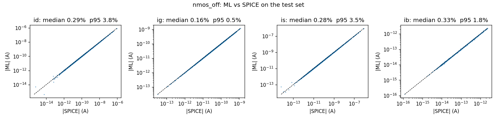
The model above is the third version. The first two had excellent transistor test scores and still failed at the gate level. How we found and fixed each problem is the most useful part of this project to understand.
| Version | What changed | gate median | gate p95 | adder median |
|---|---|---|---|---|
| v1 | 10k uniform samples per case, features: W/L | 4.26 % | 17.81 % | – |
| v2 | + 5k rail-focused samples per case | 2.01 % | 8.36 % | 4.97 % |
| v3 | + effective-width target and feature, + Vg offset feature (final) | 1.40 % | 5.55 % | 2.85 % |
Version 1 was trained on the 10,000 uniform samples only. Transistor test error ≈ 0.7 % median, yet gate median 4.26 %, p95 17.81 %, and four gate cases biased by +10 %, all of them dominated by one OFF NMOS with Vs = 0 and Vd ≈ VDD.
Imagine learning to drive only on quiet suburban streets, then taking the test on a motorway. You were trained well, just not where you are tested. In a real gate the transistor that leaks has its source exactly at 0 V (or VDD) and its drain at the output, almost exactly at VDD (or 0). Uniform sampling of Vd, Vs ∈ [0, VDD] almost never lands there: only 3 of 10,000 samples were within 2 % of both rails. There the model was extrapolating, with 3.7 % median error against 0.45 % in the interior.
Fix: the brief allows "the number of samples may be increased as needed". We kept the required 10,000 uniform samples as the deliverable and added a separate rail-focused supplement of 5,000 samples per case: each of Vd, Vs is exactly 0 or VDD one third of the time, and otherwise follows an arcsine distribution (Beta(½,½)), which crowds samples near both rails but still covers the middle. Model selection averages the uniform and rail validation scores; test numbers are still reported on the untouched uniform test set.
Version 2 halved the gate error, but two systematic patterns remained: some gates +3 % too high, AND2 "11" and OR2 "00" 6 % too low. To find out which transistor was responsible, we built a diagnostic: take every transistor inside the gate, re-simulate it alone in SPICE at the exact terminal voltages it has inside the gate, and compare its power with the ML prediction, device by device.
| Gate | Culprit transistor | Its condition | ML error | Cause |
|---|---|---|---|---|
| AND2 11 | inverter NMOS (OFF) | Vg = 16 mV, not 0 | −27 % | model had no Vg input |
| INV 0 | NMOS (OFF) | Vs = 0, Vd ≈ VDD, W = 2L | +3.6 % | width effect poorly learnt for narrow devices |
Gate voltage. In AND2 the inverter is driven by the NAND output, a "logic 0" that actually sits at 16-60 mV. Sub-threshold current is exponential in VGS: 16 mV/(1.5·26 mV) ≈ 0.4 → e0.4 ≈ 1.5× more current. Our cases fixed Vg at exactly 0 or VDD, so the model could not see this. Fix: add (Vg − ideal)/VT as a feature, and in the supplement move Vg up to 10 % of VDD away from its rail half the time.
Effective width. BSIM4 trims wint = 5 nm from each edge of the channel, so a drawn W = 16 nm conducts like 6 nm and W = 32 nm like 22 nm. Current is proportional to Weff, not W. At the narrow end the relationship is strongly curved, and the network, given only W/L, under-fitted it in a wavy pattern: +5.3 % at W = 1.5L, +2.8 % at 2L, −2.6 % at 3L. Fix: predict conductance per unit effective width and feed log(Weff/L). The bias dropped to within ±1.5 % at every width.
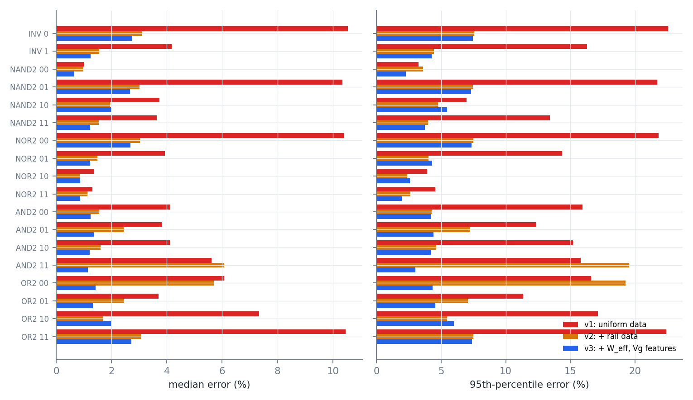
A great test-set score is necessary but not sufficient. The test set measures accuracy where the data was drawn; the application decides where accuracy is needed. Every fix here came from an error pattern, a hypothesis grounded in device physics, and a targeted check, not from trying bigger models.
Same neural network and the same uniform training data, but predicting the four terminal currents directly (on an asinh signed-log scale), against our bipole model (validation set, median / p95 %). Note the bipole model here also had the rail data; the point is the size of the gap.
| case | current | direct MLP | bipole MLP (ours) |
|---|---|---|---|
| nmos_on | id | 6.42 / 29.5 | 0.91 / 4.1 |
| nmos_on | ig | 1.08 / 5.5 | 0.38 / 1.5 |
| nmos_on | is | 6.90 / 30.4 | 0.91 / 4.1 |
| nmos_on | ib | 1.05 / 4.3 | 0.61 / 2.1 |
| nmos_off | id | 2.91 / 18.8 | 0.28 / 3.8 |
| nmos_off | ig | 0.31 / 1.3 | 0.15 / 0.5 |
| nmos_off | is | 3.06 / 19.3 | 0.27 / 4.0 |
| nmos_off | ib | 0.30 / 6.7 | 0.29 / 1.9 |
| pmos_on | id | 5.98 / 25.5 | 0.87 / 3.7 |
| pmos_on | ig | 1.17 / 4.4 | 0.64 / 2.2 |
| pmos_on | is | 5.90 / 28.0 | 0.87 / 3.7 |
| pmos_on | ib | 1.57 / 6.3 | 0.58 / 2.0 |
| pmos_off | id | 2.81 / 13.8 | 0.64 / 3.7 |
| pmos_off | ig | 1.61 / 7.5 | 0.33 / 1.7 |
| pmos_off | is | 3.82 / 20.6 | 0.96 / 4.1 |
| pmos_off | ib | 0.60 / 10.3 | 0.47 / 2.3 |
The brief asks for high accuracy 'with the smallest dataset possible'. We retrained the chosen models on growing subsets of the training data. Average median error: 500 samples → 3.85 %, 1,000 samples → 1.32 %, 2,000 samples → 0.80 %, 4,000 samples → 0.62 %, 7,000 samples → 0.57 %. (Each size n also gets n/2 rail samples, the same mix as the full model; 7,000 is the whole training split.) The error falls steeply up to about 2,000 samples and then flattens: the last 3,000 samples buy only a few hundredths of a percent. So 10,000 samples per case is comfortably enough, and about 4,000 would already give sub-1 % median error.
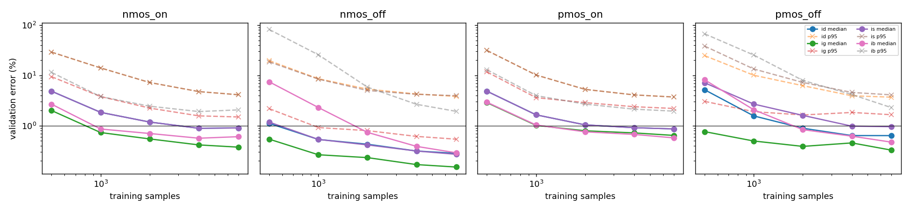
Did adding rail samples "cheat" by using test information? No. The rail samples are new random single-transistor simulations; no gate or circuit result was used. We used knowledge of where the model will be applied (terminals at the rails), which is standard practice: match the training distribution to the deployment distribution.
Why is R² almost 1 for every model when their errors differ by 10×? R² measures the share of variance explained. Our targets vary over many decades, so even a 10 %-error model explains more than 99 % of the variance. That is why median and p95 relative errors are the metrics that discriminate between models.
5 gates × all input combinations = 18 cases, each at 200 random PVT corners. SPICE simulates each full gate; the ML adds up its transistors.
Sizing: Wn = 2·Lmin = 32 nm, Wp = 4·Lmin = 64 nm. Both lie inside the 1-8·Lmin training range (not at its edge, where models are weakest), and PMOS is twice NMOS as is usual for static CMOS.
A corner = one random draw of VDD, T, one set of NMOS process parameters and one set of PMOS parameters (all NMOS in a gate share one draw, all PMOS another). The same 200 corners are reused for every gate and for the adder.
How the ML predicts a gate: for each transistor, take its four terminal voltages from the SPICE node voltages (rails, inputs, x/y, output), choose the model from its gate input's logic value (ON/OFF), predict the six bipole currents, and add up.
The obvious answer is "the current drawn from VDD". But gate tunnelling also flows into the input pins. In the isolated-gate test an ideal source supplies it; in a real circuit the previous gate does, from its own VDD. If we count only I(VDD), gate leakages don't add up to circuit leakage. So we define:
This is the standard "equivalent leakage current" (Pleak = VDD·Ileak). Defined this way, gate leakages add up to the circuit's. We also report plain I(VDD) for completeness.
Power delivered by the sources equals power absorbed by the devices (Tellegen's theorem). For a transistor, the absorbed power is the sum over its six bipoles of V·I = G·V² ≥ 0. So:
Why this is clever: an ON transistor in a leaking stack carries the leakage current across a tiny Vds (a few mV). Its channel current is hard to predict accurately, but its power is that current × a few mV, so any error is multiplied by almost zero. The formula automatically weights each prediction by how much it matters. We never need any transistor's Is directly.
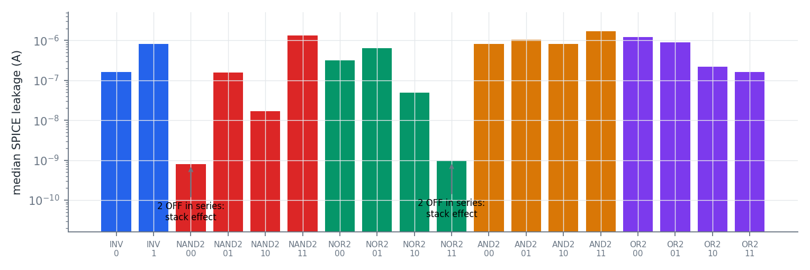
In NAND2 with AB = 00, both NMOS are OFF. The tiny leakage through the top one charges node x up to about 0.17 V (median of our 200 SPICE corners) until the two leakages balance. Now the top transistor's source is at 0.18 V instead of 0, which hurts it three ways: VGS = −0.18 V (exponentially less current), body effect (VSB > 0 raises Vth), and less VDS (less DIBL). Result: NAND2 "00" leaks about 200× less than NAND2 "01", where a single OFF NMOS blocks the path. This is why "input vector control" (parking idle circuits in their lowest-leakage input state) is a real power-saving technique.
| gate | inputs | SPICE median (A) | ML median (A) | bias % | median err % | p95 err % | I(VDD) med err % |
|---|---|---|---|---|---|---|---|
| INV | 0 | 1.61×10-7 | 1.67×10-7 | +2.32 | 2.75 | 7.44 | 3.12 |
| INV | 1 | 8.08×10-7 | 8.08×10-7 | -0.24 | 1.24 | 4.28 | 1.26 |
| NAND2 | 00 | 7.92×10-10 | 7.88×10-10 | -0.05 | 0.66 | 2.29 | 1.69 |
| NAND2 | 01 | 1.57×10-7 | 1.62×10-7 | +2.23 | 2.67 | 7.32 | 3.24 |
| NAND2 | 10 | 1.72×10-8 | 1.77×10-8 | +1.98 | 1.98 | 5.47 | 4.02 |
| NAND2 | 11 | 1.34×10-6 | 1.34×10-6 | -0.48 | 1.23 | 3.74 | 1.32 |
| NOR2 | 00 | 3.18×10-7 | 3.27×10-7 | +2.26 | 2.68 | 7.36 | 2.57 |
| NOR2 | 01 | 6.48×10-7 | 6.54×10-7 | -0.20 | 1.23 | 4.30 | 1.70 |
| NOR2 | 10 | 4.92×10-8 | 4.96×10-8 | +0.43 | 0.86 | 2.60 | 1.08 |
| NOR2 | 11 | 9.47×10-10 | 9.58×10-10 | +0.37 | 0.87 | 1.97 | 1.01 |
| AND2 | 00 | 8.08×10-7 | 8.09×10-7 | -0.29 | 1.24 | 4.24 | 1.27 |
| AND2 | 01 | 1.04×10-6 | 1.05×10-6 | +0.15 | 1.36 | 4.40 | 1.25 |
| AND2 | 10 | 8.25×10-7 | 8.26×10-7 | -0.21 | 1.22 | 4.19 | 1.21 |
| AND2 | 11 | 1.70×10-6 | 1.69×10-6 | -0.02 | 1.15 | 3.01 | 1.05 |
| OR2 | 00 | 1.22×10-6 | 1.22×10-6 | +0.29 | 1.43 | 4.34 | 1.38 |
| OR2 | 01 | 8.83×10-7 | 8.83×10-7 | +0.52 | 1.32 | 4.54 | 1.82 |
| OR2 | 10 | 2.18×10-7 | 2.21×10-7 | +1.84 | 1.98 | 6.00 | 2.42 |
| OR2 | 11 | 1.62×10-7 | 1.68×10-7 | +2.31 | 2.72 | 7.39 | 3.10 |
SPICE / ML median in A; bias = median signed error; errors are |ML−SPICE|/SPICE over 200 corners. Last column: median error if leakage is defined as plain I(VDD).
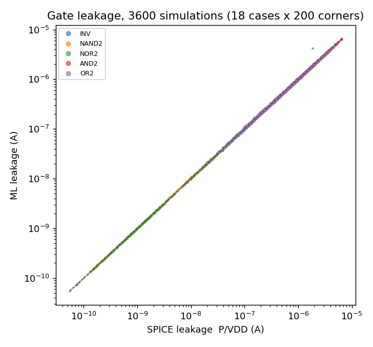
Most and least accurate: most accurate (median / p95): NOR2 11 (0.87 % / 1.97 %), NAND2 00 (0.66 % / 2.29 %), NOR2 10 (0.86 % / 2.60 %). Least accurate: INV 0 (2.75 % / 7.44 %), OR2 11 (2.72 % / 7.39 %), NOR2 00 (2.68 % / 7.36 %). Over all 3,600 simulations: median 1.40 %, p95 5.55 %, mean accuracy 98.02 %.
04_gate_validation.py · topology shared by SPICE and ML in leakml/circuits.py (so they can never disagree) · leakage definition and the Σ G·V² evaluation in leakml/evaluate.py · outputs results/gate_results.csv, results/gate_samples.csv (every simulation with SPICE node voltages), netlists/gate_*.cir.
42 gates, 204 transistors, 7 inputs → 128 input vectors × 200 corners = 25,600 full-circuit SPICE simulations, against a sum of 42 gate predictions.
A ripple adder waits for each carry to pass from bit to bit. A carry-lookahead adder computes every carry directly from the inputs using two signals per bit: generate gi = ai·bi (this bit makes a carry by itself) and propagate pi = ai ⊕ bi (this bit passes an incoming carry on).
This assumes every gate input sits exactly at 0 or VDD and that gates don't load each other. Neither is quite true: from our SPICE data, a "0" output actually sits at a few mV (inverter, median 6 mV) to about 20 mV (NAND2, median 21 mV, up to 100 mV at the hottest corners), because the OFF PMOS leaks through the ON NMOS.
A single error number can't tell you why the answer is off. So we computed three comparisons that separate the two sources of error:
| Comparison | What it isolates | median | p95 | bias |
|---|---|---|---|---|
| Hierarchical ML vs SPICE circuit | the full method of the brief | 2.85 % | 11.32 % | -2.69 % |
| SPICE gate sum vs SPICE circuit | error of the gate-level assumption itself | 2.64 % | 10.04 % | -2.64 % |
| ML gate sum vs SPICE gate sum | error of the ML models alone | 1.26 % | 3.70 % | +0.01 % |
| Flat ML (circuit node voltages) vs SPICE circuit | transistor models without any gate-level assumption | 1.21 % | 3.54 % | +0.01 % |
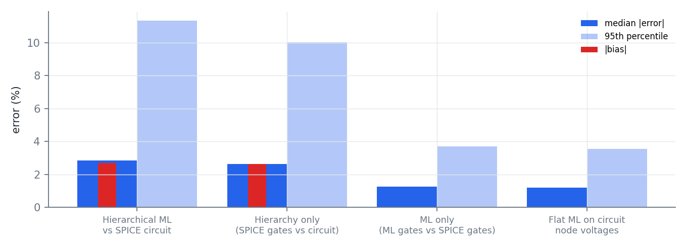
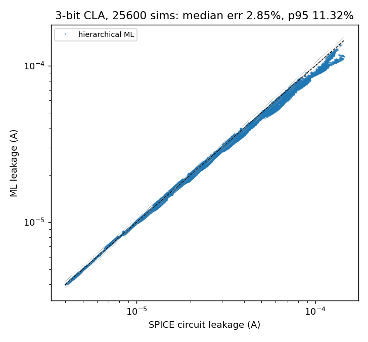
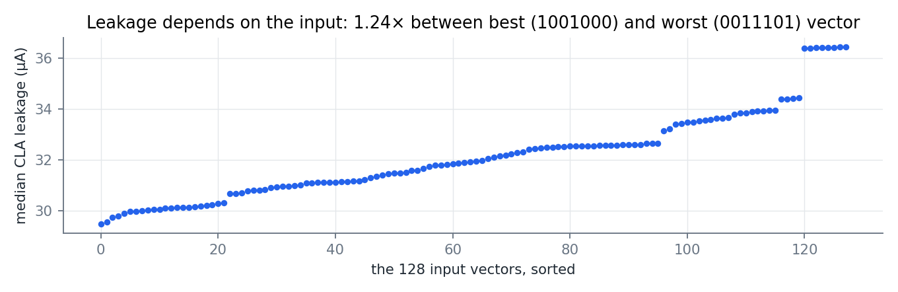
05_circuit_validation.py · CLA definition and logic check in leakml/circuits.py (cla3_gates) · outputs results/circuit_results.csv (per input vector), results/circuit_summary.csv, netlists/cla3.cir.
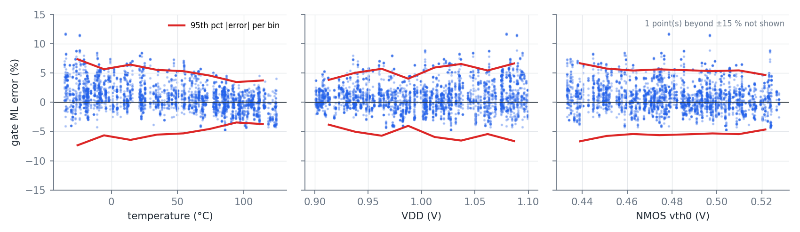
| subset of gate simulations | median |err| % | p95 |err| % |
|---|---|---|
| all gate sims | 1.40 | 5.55 |
| T > 85 °C | 1.23 | 3.63 |
| T < 0 °C | 2.00 | 6.71 |
| lowest 20 % NMOS vth0 | 1.73 | 6.39 |
| VDD > 1.07 V | 2.08 | 6.27 |
| VDD < 0.93 V | 1.13 | 3.74 |
By gate and input: the largest p95 errors are INV 0 (7.4 %), OR2 11 (7.4 %), NOR2 00 (7.4 %), NAND2 01 (7.3 %).
The decomposition in Chapter 8 answers this directly. Adding up SPICE gate leakages already misses the real adder by −2.6 % (median), with no ML involved. The ML part adds only about 1.3 % median error on top. The bias is negative because real logic levels are not ideal: a "0" sits a few to a hundred millivolts above ground and a "1" a little below VDD. Each such input turns the next gate's OFF transistor slightly on (exponentially, through VGS), so the real circuit leaks more than a table of ideal-input gates predicts.
When the same transistor models are run on the adder's real node voltages ("flat ML"), the error drops to 1.2 % median with essentially zero bias. In version 2 this number was 5.2 %. The difference is the Vg-offset feature from Chapter 6: the v3 models can see a non-ideal input level and price it correctly. So the remaining adder error belongs to the ideal-level hierarchy, not to the ML, and a "levels-aware" hierarchy (next section) is the obvious next step.
Short, confident answers. Each one points to evidence you can show.
Q. Walk me through your project in one minute.
We simulate a single 16 nm transistor 40,000 times across random process, voltage and temperature and train four ML models (NMOS/PMOS × ON/OFF) to predict its terminal currents. A gate's leakage is then the sum over its transistors, and the adder's is the sum over its 42 gates. We check both against full SPICE: median error 1.40 % for gates and 2.85 % for the adder.
Q. Why log scale?
Currents span 14 decades. On a linear scale the squared error is dominated by the largest currents. On a log scale a fixed error means a fixed percentage for every current, which is what we are graded on.
Q. Why did you not predict Id, Ig, Is, Ib directly?
Each terminal current is a sum of mechanisms with opposite signs that cancel and create sharp zero-crossings (Figure 5.1). We predict each mechanism (bipole), which is smooth and one-signed, as log G, and recombine with Kirchhoff's law. The ablation table shows the gain.
Q. How do you know the bipoles are right?
Two automatic checks: they rebuild the four SPICE terminal currents to about 1e-9 on every sample, and sign(I) = sign(V) holds for 100 % of samples.
Q. Why a neural network and not XGBoost/LightGBM?
Tree models predict piecewise constants, which is good for thresholds but poor for smooth exponential laws (Figure 4.2). On our validation set the MLP's error score was 4-7× lower than the next-best family in every case.
Q. What is L-BFGS?
A quasi-Newton optimiser: it uses the whole dataset each step and estimates curvature to take well-aimed steps. It suits small, noise-free problems like ours better than Adam.
Q. How did you choose the model? Did you look at the test set?
Every model was compared on the validation set only. The test set was used once, at the end, for the chosen model. The split is 70/15/15 with seed 42.
Q. Why does a 10 % vth0 change give 3× leakage?
Sub-threshold current is ∝ exp(−Vth/(n·kT/q)). 48 mV/(1.5 × 26 mV) ≈ 1.2 and e^(−1.2) ≈ 0.3.
Q. What is the stack effect? Show it.
Two series OFF transistors leak far less than one, because the middle node rises (about 0.17 V for our NAND2 '00'), giving the top device negative Vgs, body effect and less DIBL. Figure 7.2: NAND2 '00' leaks about 200× less than NAND2 '01'.
Q. Why is your leakage defined as power/VDD?
Gate-tunnelling current flowing into an input pin is supplied, in a real circuit, by the previous gate from VDD. Counting all source power makes gate leakages add up to the circuit's. We also report plain I(VDD); the conclusions are the same.
Q. Why is the adder less accurate than the gates?
The hierarchy assumes ideal 0/VDD levels and no loading, but real logic-0 levels are typically 6-21 mV (up to 100 mV at hot corners) at this node. Our decomposition (Figure 8.2) separates the two: the hierarchy alone costs a −2.6 % bias, while the ML part adds only about 1.3 % median error, and flat ML on the real node voltages is 1.2 %.
Q. What was the hardest bug?
ngspice's altermod silently ignores all but the first parameter on a line. We caught it by comparing the fast simulation path against standalone netlists.
Q. You added extra data: is that allowed?
Yes: the brief says the sample count may be increased. The deliverable CSVs are still the 10,000 uniform samples. The supplement targets the rail voltages where gates operate (distribution shift), and it used no gate or circuit simulations.
Q. Why is PMOS OFF gate current so poorly predicted?
It is about 1e-15 A, at the level of double-precision rounding in SPICE itself. Those values are noise, which is why we exclude currents below 1e-14 A from percentage errors and report the fraction kept.
Q. Your transistor test error was below 1 %, but the gates were worse. How did you find out why?
With a 'transistor oracle': re-simulate each transistor of a gate alone at its exact in-gate voltages and compare it with the ML, device by device. It showed a −27 % error for an OFF NMOS whose gate sat at 16 mV instead of 0 (the model had no Vg input) and a +3.6 % bias at narrow widths (effective width W − 2·wint not represented). Adding both as physics features fixed them.
Q. What is effective width and why does it matter?
BSIM4 removes wint = 5 nm from each channel edge, so a drawn 16 nm device conducts like 6 nm. Current scales with W_eff, so we predict conductance per unit W_eff and give log(W_eff/L) as a feature.
Q. What would you improve?
Solve internal node voltages with the ML models (no SPICE at all), propagate non-ideal logic levels in the hierarchy instead of assuming exact 0/VDD, and ensemble several networks to tighten the tails.
python 01_generate_transistor_data.py # 40,000 + 20,000 SPICE samples, ~2 min python 02_data_check.py # Kirchhoff check, trend plots python 03_train_models.py # 4 families x 4 cases, ~101 min on 14 cores python 04_gate_validation.py # Part B python 05_circuit_validation.py # Part C python 06_ablation_and_learning_curve.py # extra analysis python guide/build_guide.py # this PDF
Every random draw comes from fixed seeds in config.py (data 2026, split 42, corners 7).
| Deliverable (brief §6) | File(s) |
|---|---|
| 1. Datasets (4 × 10,000 rows) | data/nmos_on.csv … data/pmos_off.csv |
| 2. Example netlists | netlists/single_*.cir, netlists/gate_*.cir, netlists/cla3.cir |
| 3. Data check | results/kirchhoff_check.csv, figures/data_check_trends.png |
| 4. Model comparison | results/model_comparison.csv (+ _all_hparams) |
| 5. Chosen models | results/chosen_models_test.csv, figures/pred_vs_spice_*.png, saved_models/*.joblib |
| 6-7. Gate results and parity | results/gate_results.csv, figures/gate_parity.png |
| 8. Test-circuit results | results/circuit_results.csv, circuit_summary.csv, figures/circuit_parity.png |
| 9. Code | 01_ … 06_ scripts, config.py, leakml/ |
| BSIM4 | The industry-standard compact transistor model used by our model card (level 54). |
| Corner | One random draw of VDD, T, NMOS process and PMOS process parameters. |
| DIBL | Drain-induced barrier lowering: high VDS lowers Vth in short channels. |
| GIDL | Gate-induced drain leakage: band-to-band tunnelling at the gate-drain overlap. |
| Bipole | A two-terminal current path inside the transistor (e.g. gate→drain tunnelling). |
| Passive | Current flows from higher to lower voltage, so it only absorbs power. |
| Distribution shift | Training data drawn from a different region than where the model is used. |
| L-BFGS | A quasi-Newton optimiser that uses curvature estimates; excellent for small, noise-free fitting. |
| p95 | 95th percentile: 95 % of errors are smaller than this. |
| Stack effect | Series OFF transistors leak much less than one, because the middle node rises. |
| Tellegen's theorem | In any circuit, power delivered by the sources = power absorbed by the elements. |
| VT | Thermal voltage kT/q ≈ 26 mV at 300 K (not to be confused with Vth). |